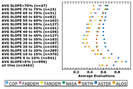
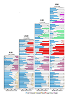
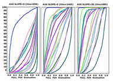
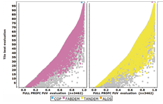
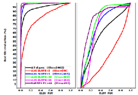
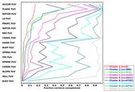
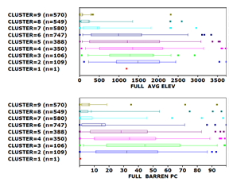
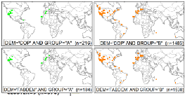
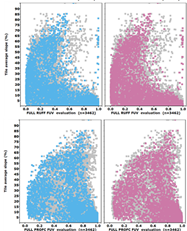

Figures From
DEMIX Papers Figures From
DEMIX Papers
Figures From
DEMIX Papers Figures From
DEMIX Papers| Figure in Guth et al. 2024 | Image | Interpretation | X-axis | Y-axis | Directions | Options |
| 2,8,15 |  |
Best test DEM to the left Test DEMs closest to reference for the lowest evaluations, on the left side of the graph |
Average evaluations, 0-1, low score wins | Filter for tiles, and the number of tiles matching | ||
| 3,7,12 |  |
ALL elevations on the left column, and then U120, U80, and U10 More test DEMs with each lower elevation band |
Won lost percentage, versus a particular test DEM which is always on
the left. Sold color, the test DEM has a lower evalution more of the time. White, the two test DEMs are within the tolerance Cross hatch, the test DEM has a higher evaluations |
The criteria. Each test test grouped together, with a gap between them. |
Pick DEMs to show. Pick criteria to include. |
|
| 4,13 |  |
Criteria closest to the left have the best correspondence between test and reference DEMs. | Average evaluations, 0-1, low score wins | Best evaluation among the test DEMs (perecentile) | ||
| 5,14 |  |
|||||
| 6 |  |
|||||
| 9 |  |
|||||
| 10 |  |
|||||
| 11 |  |
|||||
| 17 |  |
|||||
Last revision 6/24/2025